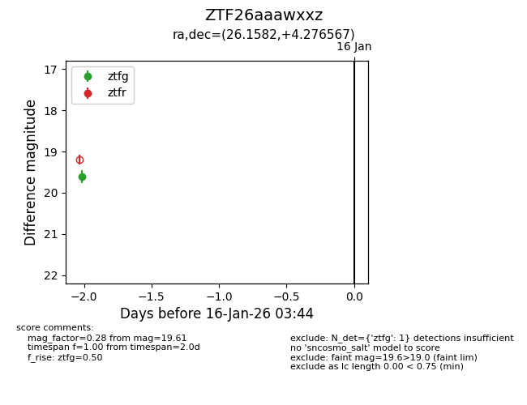
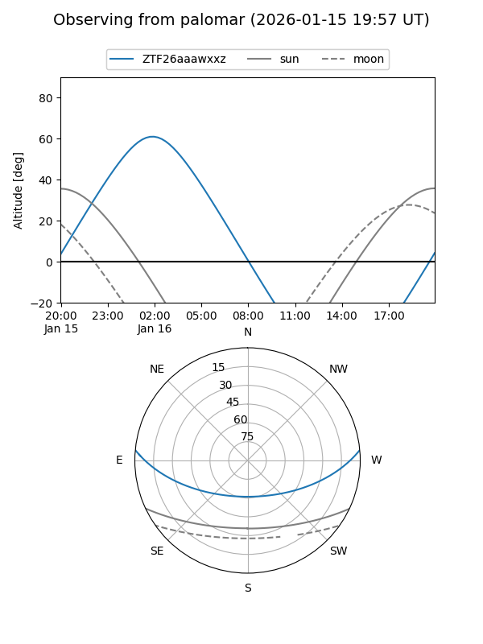

ZTF26aaawxxz
Target ZTF26aaawxxz at 2026-01-14 03:39
Aliases and brokers:
FINK: link
Lasair: link
ALeRCE: link
alt names
ZTF26aaawxxz (ztf,fink_ztf)
Coordinates:
equatorial (ra, dec) = 26.1582,+4.27657
equatorial (HMS+DMS) = 01:44:37.96,+04:16:35.64
galactic (l, b) = (147.1959,-56.06872)
Flags:
Photometry:
last ztfg=19.61
1 ztfg detections
Lightcurve

Visibility


Additional plots